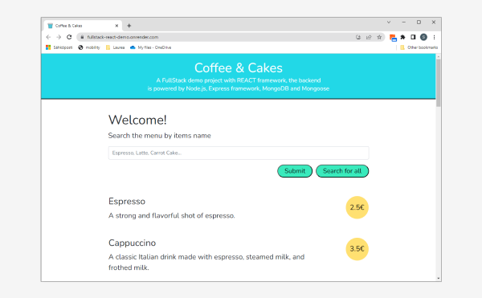
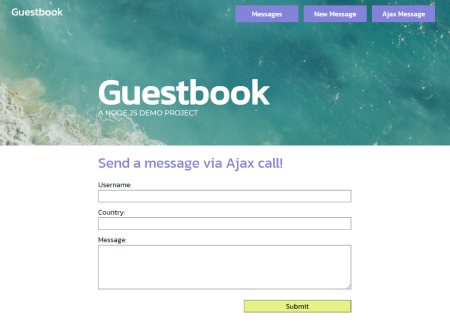
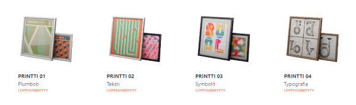
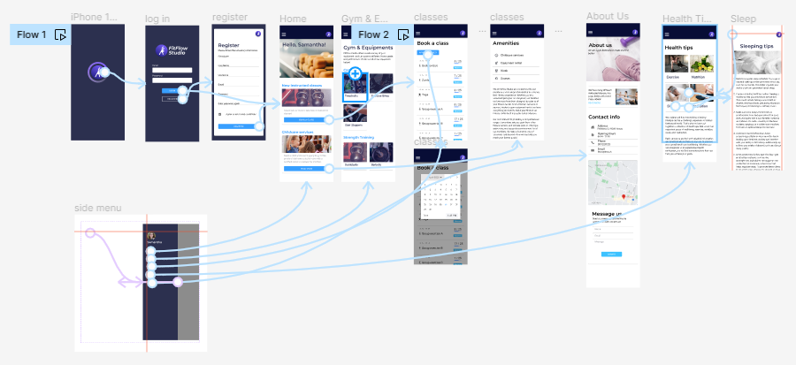
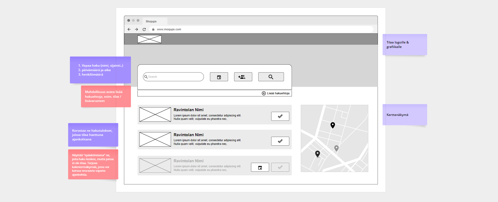
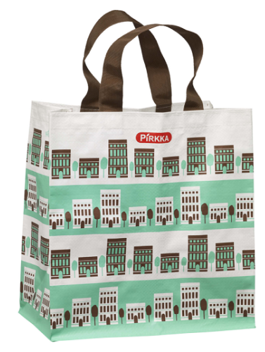

-
Node.js REST API demo
FullStack kurssityö: REST API. Käyttää Mongoosea API:n tietokantakyselyissä. Front-end rakennettu käyttäen EJS-sivupohjia. Renderissä julkaistussa versiossa voi tarkastella GET-metodia.
Julkaistu Renderissä / GitHub -
REACT demo
Ylläolevalle REST API -työlle rakennettu REACT Front-end. Renderissä julkaistussa versiossa voi tarkastella hakutoimintoja, saattaa vaatia CORS-lisäosan toimiakseen.
Julkaistu Renderissä / GitHub
 -
Node.js demo "Guestbook"
Node.js:llä ja Expressillä luotu vieraskirjan demosivu. Käyttäjä voi lähettää sivustolla viestejä, JSON ja HTTP POST / AJAX -harjoitus.
Julkaistu Renderissä / GitHub
 -
Verkkokauppa
Verkkokaupan mockup -sivu. HTML & CSS harjoitus.
https://haiku-art.github.io
 -
"Elokuvaoraakkeli"
JavaScript-kurssilla toteutettu elokuvasovellus, joka hyödyntää Finnkinon API:a.
Julkaistu Netlifyssä / GitHub
-
UX Design Portfolio
Figmassa julkaistu portfolio. Kurssityö, jossa tutkin, kuinka Laurean intranetissä olevien opastemateriaalien käyttökokemusta voisi kehittää: Julkaistu Figmassa

-
UI prototyyppi: kuntosalisovellus
Mobiilisovelluskurssille tehty UI prototyyppi. Ryhmätyö, jossa vastasin visuaalisesta ilmeestä. Toteutimme sovelluksen Ionicia ja Angularia hyödyntäen tämän prototyypin pohjalta.
Prototyypin Flow Figmassa / GitHub
 -
UI prototyyppi: Ravintolan varaussivu
Yksinkertainen Figmaharjoitus, vaatimusten pohjalta toteutettu prottyyppi ja flow mobiiliin ja selaimeen:
Wireframet / Mobiili / Selain

-
Joukko graafisen suunnittelun töitä: animaatioita, vektorigrafiikkaa, kuvituksia sekä muita vanhoja työnäytteitä: Portfolio
